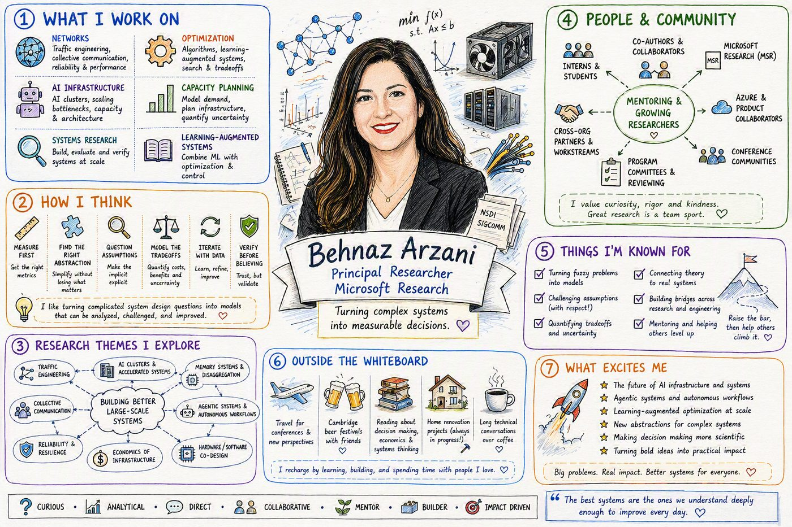

About
Behnaz Arzani
In my current role as a principal researcher at Microsoft Research I lead large research efforts that make significant contributions to the field of network management. Some examples of my past collaborative work include MetaOpt (a tool for heuristic analysis and development), Soroush (a max-min fair resource allocation solution endorsed by tech-leads in Azure), Scouts (a solution to speed-up incident diagnosis), and PrivateEye (a solution to provide GDPR compliant compromise detection). I got my PhD in computer science from the University of Pennsylvania in 2017 working with my advisors Prof. Boon Thau Loo and Prof. Roch Guerin and started at Microsoft as a post doctoral researcher. I completed my dual masters degree in computer science and electrical engineering at the University of Pennsylvania in the same year. I completed my B. Sc. in Electrical Engineering at Sharif University of Technology in 2010. You can download my CV here.
I followed the trend and got workIQ (internal Microsoft CoPilot MCP that enables access to all emails, meeting transcripts etc) to create a profile. The picture looks nothing like me but here is who it thinks I am:
